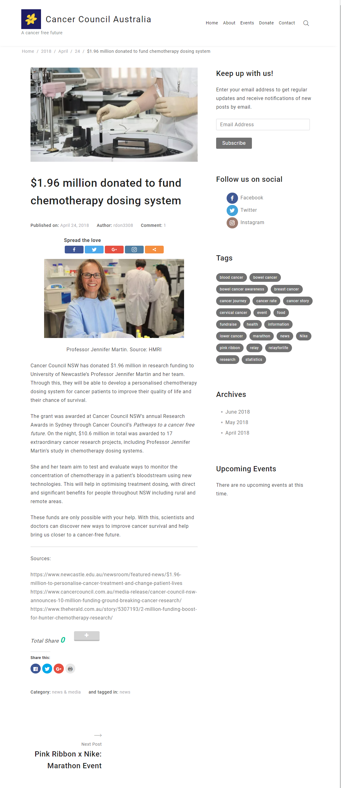
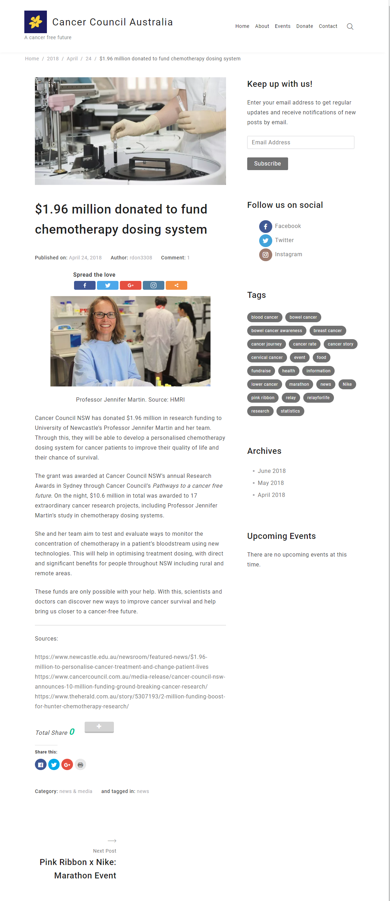

Summary
Cancer Council Australia is Australia's biggest charity organisation dedicated to funding research and bringing awareness towards a cancer-free future. I researched Cancer Council as part of my social media strategy project, where I worked with my colleague to devise a strategy to increase youth engagement with Cancer Council's social media channels. In addition, we also designed a WordPress site to act as the content hub to supplement the proposed strategy.
Research
To begin we started off by doing research of the health organisation and its social media channels. We conducted online ethnography focusing on three of their social media channels: Facebook, Twitter and Instagram. This involved collecting content from their past posts, comments, replies and taking note of themes and personality. We used a social media analysis tool called Socialbakers to monitor reach and engagement metrics. We further explored big data tools such as Similar Web and Google Trends to understand site traffic and common topics related to cancer on the web.
Results
From this, it was found that each of the social media channels had different audience personalities, values and engagements. The Facebook community valued knowledge of organisational services, health education, and diversity. There were also several enquiries about Cancer Council sun protection products. On Twitter, followers liked to hear about support services, international cancer events, inspirational stories and government-related news. Retweets of international events from other official twitter accounts gained more interactions and reach. Instagram being a image-focused channel showed a higher appreciation for infographics and posts regarding diversity and community. While Instagram had a lesser amount of followers, analysis tools revealed that they engaged with posts more so than in other channels. Across all channels, the content that gained the most attention were images, videos and informational links. In our research these types of posts had more interactions (as likes, comments or shares) and were capable of capturing attention and conveying information at a quick glance.
Forming a Strategy
Due to the lack of youth presence on Cancer Council social media, we wanted to focus on increasing engagement with teens and young adults in the 16-25 age group. Since most of the demographic is online using the existing social media platforms, this would allow a further reach throughout the online community and help get people involved in fundraising events.
To do this, we saw three main post types needed: Images, Videos and Informational Links to be used across each of the research digital channels. According to the personality and nature of each platform, we outlined the types of content each social media should post to raise engagement.
From this I created a content pillar chart to document what kinds of content - be it inspirational, educational, or event-based - should be used in their social media and how it would be distributed.

WordPress Website
The WordPress website acted as the content hub for posts from our social media strategy. We chose to go with a clean, minimalist theme to go with the white and yellow of their brand colours, in line with the seriousness of the subject but with a friendly interface to convey the support the organisation gives in turn. The image of a yellow flower that reminds of the daffodil used in their logo, symbolising hope, which was used in the landing page's hero.

Following the content pillars and post types we identified in our engagement strategy, we created blog posts and pages which highlights engagement with the cause and within the community. Posts involved short reads of cancer information, fundraising events and inspirational stories about how Cancer Council has helped young Australians. Images were key in attracting attention to each post along with a succinct headline.
 The range of posts we created to fill in content, as displayed on the home page below the hero image. Each one has a related image, a headline and a preview of the text to gain viewer attention and relay content in a short amount of time.

The range of posts we created to fill in content, as displayed on the home page below the hero image. Each one has a related image, a headline and a preview of the text to gain viewer attention and relay content in a short amount of time.

Engagement with the organisation was created through the Events and Donate pages. In Events, site visitors would be able to view upcoming events and register for volunteering in Cancer Council events in their community. In Donate, visitors can browse Cancer Council products such as sunscreen, hats and collaboration products with their sponsors as well as donate directly to Cancer Council.